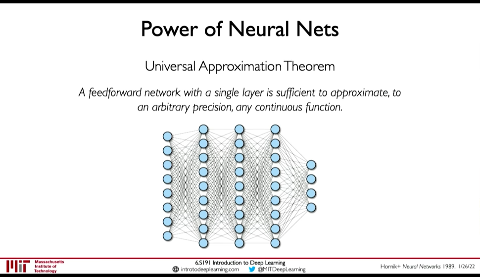
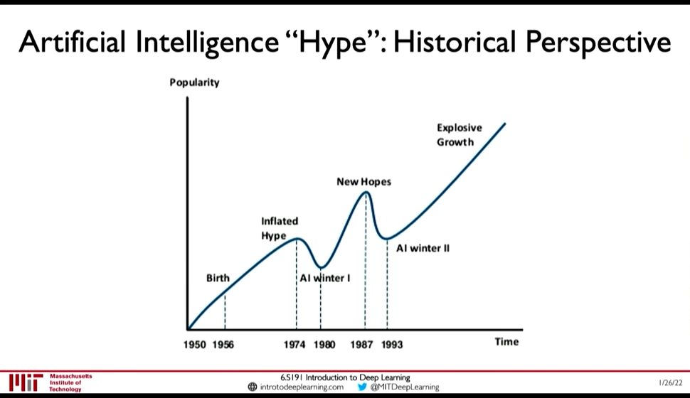
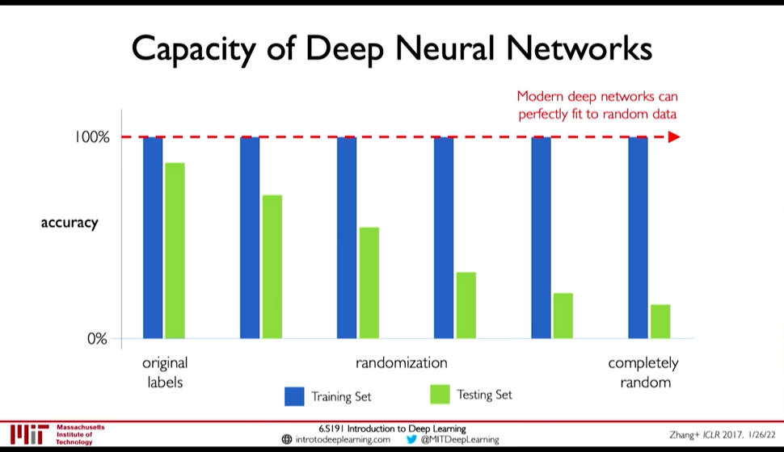
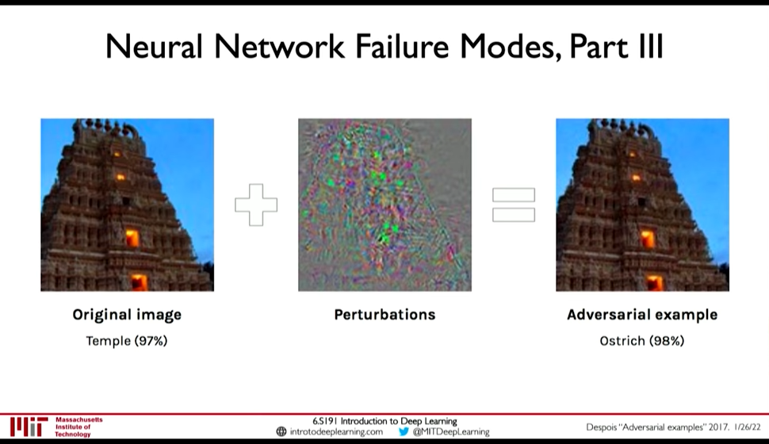
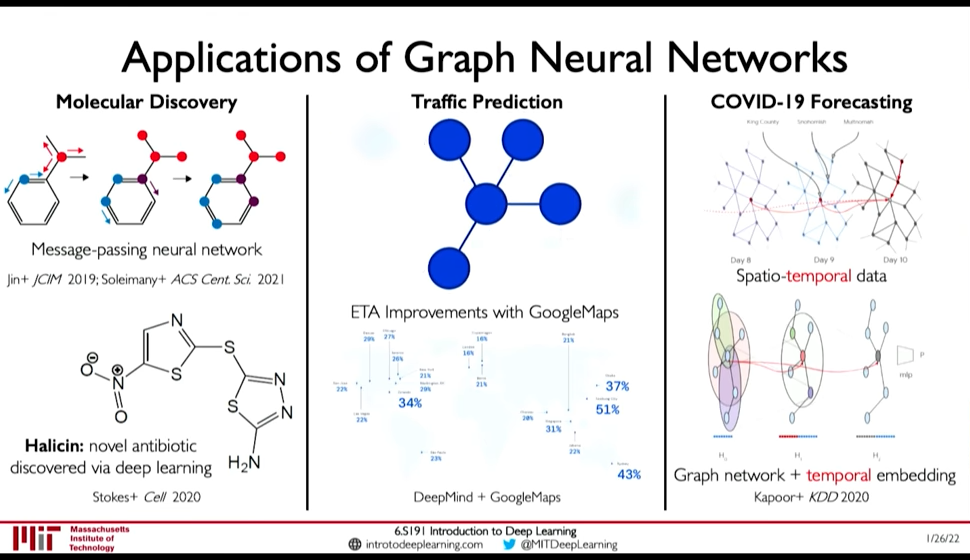

Deep Learning New Frontiers
Table of Contents
Lecture 6: Deep Learning: Limitations & New Frontiers
1. Universal Approximation Theorem
0:10:07
A feedforward network with a single layer is sufficient to approximate, to an arbitrary precision, any continuous function.
 But,
- number of hidden units may be infeasibly large
- the resulting model may not generalize
- no method to find weights is provided by this theorem
2. AI `Hype`: Historical Perspective
0:13:15

Figure 1: AI History
3. Limitations
3.1. Generalization
0:15:08
Understanding Deep Neural Networks requires rethinking Generalization
In Zhang+ ICLR 2017 Paper,
- they assign random labels to image classification training set
- as the degree of randomization increased, the test accuracy decreased
- but the training accuracy didn't
This implies, the NN was able to fit the random data.

Figure 2: Deep NN can fit to random data
3.2. Aleatoric Uncertainty
0:27:30 Uncertainty inherent in the data.
E.g. for a NN trained to classify dog vs cat. If we show image with both cat and dog, it should output P(cat) = 1 and P(dog) = 1 but it can't because it is constrained (P(cat) + P(dog) = 1)
3.3. Epistemic Uncertainty
Network's confidence in its perdiction. Aka. model uncertainty.
3.4. Perturbations: Adversarial Examples
0:30:23
 To generate adversarial examples, fix the label (\(y\)) and weight (\(W\)), and perturb the input (\(x\)) to increase the loss.
\(x \leftarrow x + \eta \frac {\partial L(W,x,y)} {\partial x}\)
3.5. Other Limitations
0:35:05
- Very data hungry (eg, often millions of examples)
- Computationally intensive to train and deploy (tractably requires GPUs)
- Easily fooled by adversarial examples
- Can be subject to algorithmic bias
- Poor at representing uncertainty (how do you know what the model knows?)
- Uninterpretable black boxes, difficult to trust
- Difficult to encode structure and prior knowledge during learning
- Finicky to optimize: non-convex, choice of architecture, learning parameters
- Often require expert knowledge to design, fine tune architectures
4. Frontiers
4.1. Graph Convolution Networks
0:38:13

Figure 3: Applications of Graph Neural Network
4.2. Automated Machine Learning & Learning to Learn
0:45:43
- AutoML